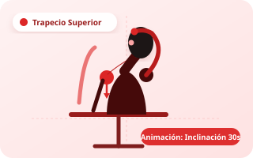

airline_seat_recline_normal
CUELLO
30s estáticos
Flexión Lateral Cervical con Descenso Escapular
Trapecio superior & Elevador de la escápula
Series
2 a 3
Repeticiones
1 sostenido
Tiempo
30s
Descanso
15s

motion_photos_on
Animación del Movimiento
air
Respiración:
Inhala antes de inclinar, exhala prolongadamente durante el estiramiento.
sentiment_satisfied
Sensación esperada:
Tensión agradable 4/10 en el lateral del cuello, sin pellizcos.
stairs
Técnica de Ejecución Biomecánica
Paso a paso
shield
Recomendación Fisioterapéutica y Seguridad Biomecánica
No jales la cabeza con fuerza. Solo deja caer el peso de tu mano sobre la sien. Si sientes hormigueo o dolor que se irradia hacia el brazo, detén el estiramiento de inmediato.